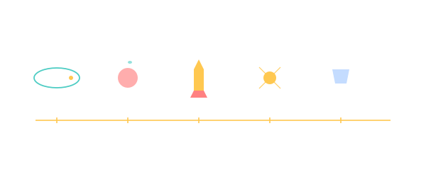

HISTORY

101 · zoom in
History — how a few hundred years of physics put us in orbit.
Spaceflight didn't appear from nowhere. It rests on a stack of discoveries — Kepler's ellipses, Newton's gravity, Tsiolkovsky's rocket equation, Goddard's first liquid burn, Korolev's R-7 — each one assembled on the previous. This tab walks the milestones in chronological order, names the people who got there, and points back into the rest of /science where the maths lives.
We've cherry-picked six pivots. Hundreds more deserve a place; future revisions will fill them in (Galileo's telescopes, Hohmann's transfer paper, Goddard's wife who took most of the photos, the Soviet engineers Korolev couldn't name in public, Ed White's spacewalk, von Kármán's altitude line). The story isn't owned by any one nation — every chapter has people you've never heard of who made it work.
Read it as a chain. Each step required the previous one. None were inevitable.
→ Pick a section from the right rail to start reading.